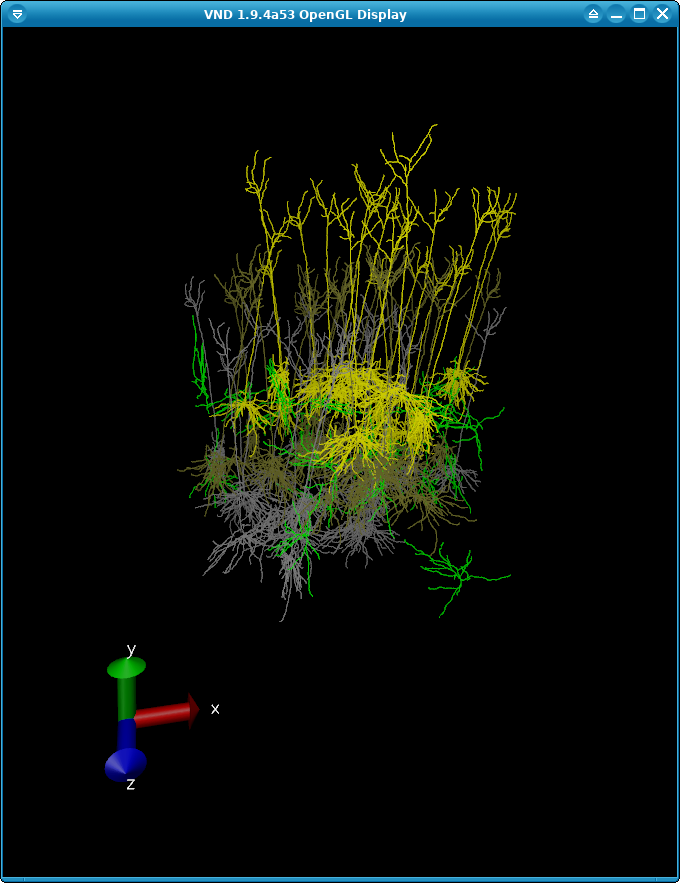
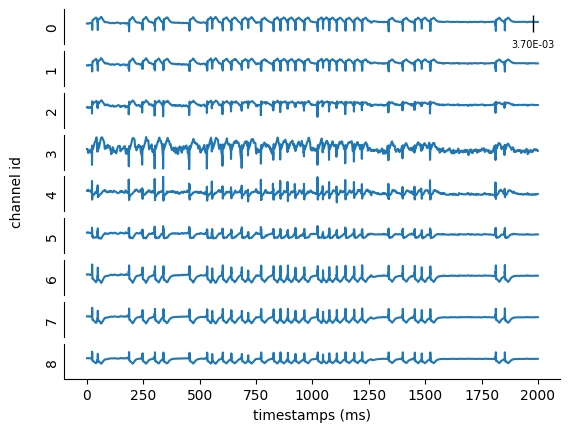
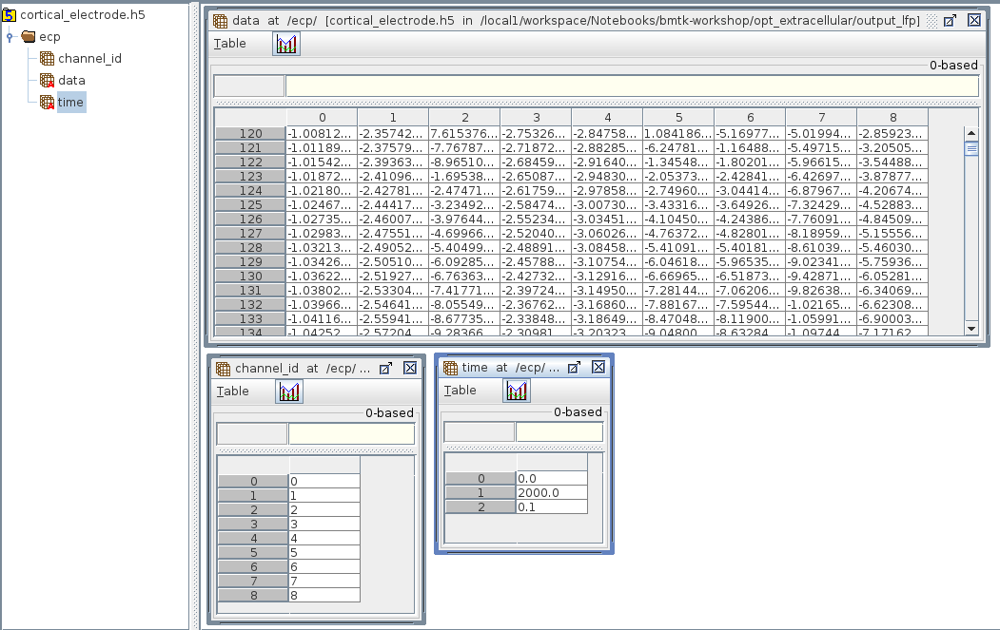
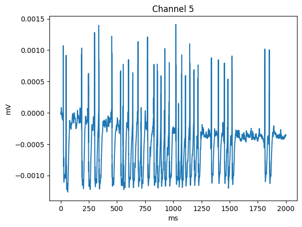
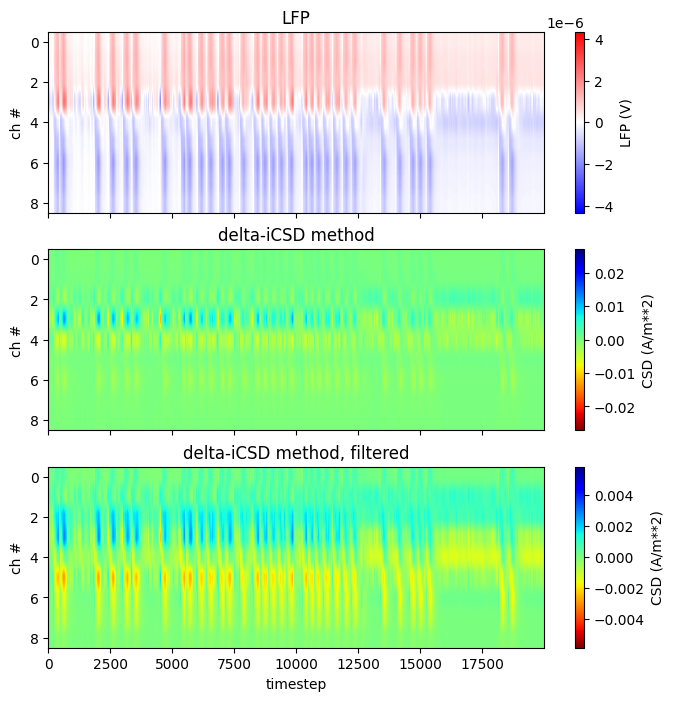

Recording Extracellular Potentials and Current Source Densities#
Extracellular local field potential (LFP) recordings are among the most common electrophysiological recordings for studying brain function. Thus, many scientists might be interested in recording LFPs while simulating the activity of distinct brain areas to replicate or compare to in-vivo experimental recordings. This tutorial shows how to record extracellular LFPs with BioNet, modify the extracellular resistance, and calculate the current source density (CSD) generating the measured LFPs.
Note - scripts and files for running this tutorial can be found in the directory 05_opt_extracellular/
1. Example: Recording Extracellular Local Field Potentials (LFPs)#
A part of BioNet’s built-in functionality is the ability to record extracellular LFPs from morphologically detailed networks of cells. Like with in-vivo experiments, it involves placing one or more electrodes by the cells that will pick up the change of the extracellular potentials throughout the experiment/simulation. This can be useful for comparing simulations to actual experiment recordings taken from an M.E.A., neuronal probe, ECoG, or EEG. It can also be used to calculate the CSD, thus capturing the slow-reacting, non-spiking dynamics of your network.
Note: BMTK only supports capturing the LFPs for biophysical model_type cells. It will not work in PointNet since these are point-neuron cells, which cannot directly generate extracellular potentials - generated by spatially separated transmembrane currents. Nor will it work with BioNet/NEURON point-neuron models. If a network contains a mix of biophysical and point-neuron models, the point-neuron models will be ignored when collecting extracellular recordings.
Also, NOTE that adding extracellular potential recordings to your network is computationally expensive. Expect simulations to take significantly longer than if you were just recording spikes or membrane voltages.
Step 1: Building a Network (Caveats)#
Creating a network that is capable of recording LFPs is no different than the way you would normally create a SONATA-based network. And most of the time, we can dynamically add a recording electrode before any simulation. However, there are some requirements that we must be cognizant of:
Our network MUST have attributes x, y, z defined for all cells being recorded by our electrode (s). Variables like spiking events or membrane potential are spatially invariant, so the exact coordinates of each cell of the network are not required. With extracellular recordings, the distance between the cells and electrodes will be very important in determining LFP.
You should also take care that rotation_angle_xaxis, rotation_angle_yaxis, and rotation_angle_zaxis are set properly. Especially if the cell is bipolar-like in morphology, it can make a big difference. However, if you want to use the default morphology from the swc, asc, hoc, etc, then not specifying the rotation_angles will just default rotations to 0.0
In this example, we build our network cells like such:
x, y, z = get_coords(20, y_range=[-300, -100])
cortcol.add_nodes(
N=20,
# Reserved SONATA keywords used during simulation
model_type='biophysical',
model_template='ctdb:Biophys1.hoc',
model_processing='aibs_perisomatic',
dynamics_params='Scnn1a_485510712_params.json',
morphology='Scnn1a_485510712_morphology.swc',
# The x, y, z locations and orientations (in Euler angles) of each cell
# Here, rotation around the pia-to-white-matter axis is randomized
x=x,
y=y,
z=z,
rotation_angle_xaxis=0,
rotation_angle_yaxis=np.random.uniform(0.0, 2 * np.pi, size=20),
rotation_angle_zaxis=3.646878266,
tuning_angle=np.linspace(start=0.0, stop=360.0, num=20, endpoint=False),
layer='L23',
model_name='Scnn1a',
ei='e'
)
In this particular example, we use a very simplified “cortical column” consisting of layers L2/3, L4 (which receives most of the network inputs), and L5 pyramidal cells surrounded by inhibitory interneurons. The cells are built in a column parallel to the y axis and centered at x=0 and z=0.
We can use VND to visualize our network to make sure the layering and rotation of our cells are correct:

The full script for this example can be found in the file build_network.lfp.py. We encourage you to make changes and test out the effects different cell types, synapses, and geometry have on LFP recordings. You can also try using a different network altogether.
Step 2: Adding “ecp” recordings to simulation config.#
The next step is to open up our SONATA simulation configuration file (config.lfp.json) so that it contains the following in the “reports” section.
"reports": {
"cortical_electrode": {
"module": "extracellular",
"variable_name": "v",
"cells": "all",
"electrode_positions": "./components/electrodes/linear_electrode.csv",
"electrode_channels": "all"
}
}
The module should always be set to value
extracellular, which tells BMTK what type of recording to apply.The variable_name should be set to
v, which is the voltage just outside of every compartment membrane.Setting cells to all tells BMTK to record the extracellular potential of all (biophysical) cells in the model. You can use the
node_setto select only a portion of cells to record from. For example, if you wanted to filter by specific node-ids:
"cells": {
"population": "cortcol",
"node_ids": [0, 100, 200, 300]
},
or if you wanted to record from Layer 4 excitatory cells
"cells": {
"layer": "L4",
"ei": "e"
},
electrode_positions will point to the csv file containing recording electrodes (see below)
We set electrode_channels to
allto indicate the use of all possible electrodes in the electrodes csv file.
Step 3: Creating electrodes file#
We must tell BioNet the location of all recording electrodes, which we specify in the file ./componets/electrodes/linear_electrodes.csv. This is a simple space-separated file where each line represents the channel_id, x, y, and z position for each channel that will be recording ecp from.
[1]:
import pandas as pd
pd.read_csv('components/electrodes/linear_electrode.csv', sep=' ')
[1]:
| channel | x_pos | y_pos | z_pos | |
|---|---|---|---|---|
| 0 | 0 | 0.0 | 0.0 | 0.0 |
| 1 | 1 | 0.0 | -100.0 | 0.0 |
| 2 | 2 | 0.0 | -200.0 | 0.0 |
| 3 | 3 | 0.0 | -300.0 | 0.0 |
| 4 | 4 | 0.0 | -400.0 | 0.0 |
| 5 | 5 | 0.0 | -500.0 | 0.0 |
| 6 | 6 | 0.0 | -600.0 | 0.0 |
| 7 | 7 | 0.0 | -700.0 | 0.0 |
| 8 | 8 | 0.0 | -800.0 | 0.0 |
In this example, an electrode array placed straight down the column will record the LFP at every 100-micron interval. Like with the placement of cells, we can use whatever coordinate framework for placing our network. In this case, we assume our column is centered at the axis. However, we could also use a global framework like the CCF. The important thing for BMTK is that the electrodes and cells must be in the same coordinate system.
Step 4: Running the simulation#
Now that we’ve updated our simulation configuration accordingly, we can run the simulation like we normally would (be mindful that it will likely take longer and use more resources than normal):
[2]:
! cd components/mechanisms && nrnivmodl modfiles
/home/shared/workspace/docs/tutorial/05_opt_extracellular/components/mechanisms
Mod files: "modfiles/CaDynamics.mod" "modfiles/Ca_HVA.mod" "modfiles/Ca_LVA.mod" "modfiles/Ih.mod" "modfiles/Im.mod" "modfiles/Im_v2.mod" "modfiles/K_P.mod" "modfiles/K_T.mod" "modfiles/Kd.mod" "modfiles/Kv2like.mod" "modfiles/Kv3_1.mod" "modfiles/NaTa.mod" "modfiles/NaTs.mod" "modfiles/NaV.mod" "modfiles/Nap.mod" "modfiles/SK.mod" "modfiles/exp1isyn.mod" "modfiles/exp1syn.mod" "modfiles/stp1syn.mod" "modfiles/stp2syn.mod" "modfiles/stp3syn.mod" "modfiles/stp4syn.mod" "modfiles/stp5isyn.mod" "modfiles/stp5syn.mod" "modfiles/vecevent.mod"
COBJS=''
-> Compiling mod_func.c
gcc -O2 -I. -I/opt/conda/envs/bmtk/lib/python3.9/site-packages/neuron/.data/include -I/nrnwheel/openmpi/include -fPIC -c mod_func.c -o mod_func.o
=> LINKING shared library ./libnrnmech.so
g++ -O2 -DVERSION_INFO='8.0.0' -std=c++11 -shared -fPIC -I /opt/conda/envs/bmtk/lib/python3.9/site-packages/neuron/.data/include -o ./libnrnmech.so -Wl,-soname,libnrnmech.so \
./mod_func.o ./CaDynamics.o ./Ca_HVA.o ./Ca_LVA.o ./Ih.o ./Im.o ./Im_v2.o ./K_P.o ./K_T.o ./Kd.o ./Kv2like.o ./Kv3_1.o ./NaTa.o ./NaTs.o ./NaV.o ./Nap.o ./SK.o ./exp1isyn.o ./exp1syn.o ./stp1syn.o ./stp2syn.o ./stp3syn.o ./stp4syn.o ./stp5isyn.o ./stp5syn.o ./vecevent.o -L/opt/conda/envs/bmtk/lib/python3.9/site-packages/neuron/.data/lib -lnrniv -Wl,-rpath,/opt/conda/envs/bmtk/lib/python3.9/site-packages/neuron/.data/lib
rm -f ./.libs/libnrnmech.so ; mkdir -p ./.libs ; cp ./libnrnmech.so ./.libs/libnrnmech.so
Successfully created x86_64/special
[3]:
from bmtk.simulator import bionet
bionet.reset()
conf = bionet.Config.from_json('config.lfp.json')
conf.build_env()
net = bionet.BioNetwork.from_config(conf)
sim = bionet.BioSimulator.from_config(conf, network=net)
sim.run()
Warning: no DISPLAY environment variable.
--No graphics will be displayed.
2024-10-21 17:26:00,659 [INFO] Created log file
2024-10-21 17:26:00,876 [INFO] Building cells.
2024-10-21 17:26:04,530 [INFO] Building recurrent connections
2024-10-21 17:26:05,813 [INFO] Building virtual cell stimulations for virt_exc_spikes
2024-10-21 17:26:08,413 [INFO] Running simulation for 2000.000 ms with the time step 0.100 ms
2024-10-21 17:26:08,414 [INFO] Starting timestep: 0 at t_sim: 0.000 ms
2024-10-21 17:26:08,414 [INFO] Block save every 5000 steps
2024-10-21 17:26:53,054 [INFO] step:5000 t_sim:500.00 ms
2024-10-21 17:27:38,462 [INFO] step:10000 t_sim:1000.00 ms
2024-10-21 17:28:26,600 [INFO] step:15000 t_sim:1500.00 ms
2024-10-21 17:29:10,021 [INFO] step:20000 t_sim:2000.00 ms
2024-10-21 17:29:10,085 [INFO] Simulation completed in 3.0 minutes, 1.672 seconds
Step 5: Analyzing the results#
The bmtk.analyzer.ecp package of BMTK includes a number of tools for analyzing and visualizing the results of the electrode recordings:
[4]:
from bmtk.analyzer.ecp import plot_ecp
_ = plot_ecp(config_file='config.lfp.json', report_name='cortical_electrode')

But if you need to analyze the results yourself, they will be saved in the output/cortical_electrode.h5 file, which is an HDF5 following SONATA format for Extracellular reports. The results are stored in the /ecp/data table that is \(T-timestamps x N-channels\) in size.

[5]:
import h5py
import numpy as np
import matplotlib.pyplot as plt
channel_id = 5
with h5py.File('output_lfp/cortical_electrode.h5', 'r') as h5:
channel_idx = np.argwhere(h5['/ecp/channel_id'][()] == channel_id).flatten()
ts = np.arange(start=h5['/ecp/time'][0], stop=h5['/ecp/time'][1], step=h5['/ecp/time'][2])
plt.plot(ts, h5['/ecp/data'][:, channel_idx])
plt.title(f'Channel {channel_id}')
plt.xlabel(h5['/ecp/time'].attrs['units'])
plt.ylabel(h5['/ecp/data'].attrs['units'])

(Optional) Finding individual contributions#
When each channel in the electrode calculates the ECP at each given time, it does so by taking the extracellular Vm of each cell, adjusting for distance and interstitual resistance, and summing the results over all recorded cells.
Sometimes, for deeper analysis of a simulation, you may want to measure the individual contribution each cell has on the electrode. To do so in our simulation we just need to add the contributions_dir option to the simulation configuration:
"reports": {
"cortical_electrode": {
"module": "extracellular",
"variable_name": "v",
"cells": "all",
"electrode_positions": "./components/electrodes/linear_electrode.csv",
"electrode_channels": "all",
"contributions_dir": "cell_contributions"
}
}
Now, when you run the simulation, it will add an extra directory output_lfp/cell_contributions/ that will contain N SONATA Extracellular reports for each N individual cell (The file name of each h5 will correspond to the node_id of each cell).
Be WARNED that adding the “contributions_dir” option will take up a lot of disk space for even moderately sized networks. Feel free to edit config.lfp.json and see how different cells and cell-types differ in their LFP signatures.
2. Example: Calculating the Current Source Density (CSD)#
Scientists are often interested in estimating the current sources or CSD generating the measured LFPs. Calculating the CSD associated with simulated LFPs can also be useful for comparing simulations to experimental data. This example demonstrates how to compute the CSD from the simulated LFPs in the first example using the iCSD method from Pettersen et al. 2006. The iCSD methods can be applied to data recorded from multielectrode arrays with various geometries.
iCSD methods are available in the py-iCSD toolbox, which is a translation of the core functionality of the CSDplotter MATLAB package to Python. The py-ICSD toolbox can be downloaded from espenhgn/iCSD
[6]:
import sys
sys.path.append('icsd_scripts/')
For the below scripts you will also need to install third party packages quantities and neo to handle dimensional units and electrophysiology calculations, respectively
[7]:
import icsd
import quantities as pq
/home/shared/workspace/docs/tutorial/05_opt_extracellular/icsd_scripts/icsd.py:1292: SyntaxWarning: "is not" with a literal. Did you mean "!="?
if f_type is not "identity" and f_order is None:
Step 1: Setting up quantities for py-iCSD toolbox#
All inputs to the iCSD methods class instances are considered Quantity arrays. First, we need to patch quantities with the SI unit Siemens if it does not exist:
[8]:
for symbol, prefix, definition, u_symbol in zip(
['siemens', 'S', 'mS', 'uS', 'nS', 'pS'],
['', '', 'milli', 'micro', 'nano', 'pico'],
[pq.A/pq.V, pq.A/pq.V, 'S', 'mS', 'uS', 'nS'],
[None, None, None, None, u'µS', None]):
if type(definition) is str:
definition = lastdefinition / 1000
if not hasattr(pq, symbol):
setattr(pq, symbol, pq.UnitQuantity(
prefix + 'siemens',
definition,
symbol=symbol,
u_symbol=u_symbol))
lastdefinition = definition
Step 2: Preparing LFP data and defining parameters for the CSD calculation#
The iCSD method considers the CSD to have cylindrical symmetry with a diameter diam specified by the user based on the geometry of your simulated network or the area captured by your experimental recordings. Here, we calculate the CSD assuming a homogenous conductivity sigma throughout the column and an infinite medium (i.e., the extracellular conductivity above the cortical surface is the same as the grey matter conductivity - sigma_top = sigma). However, you can use a different
value for sigma_top if you use substances such as saline (with a high conductivity) or oil (with a very low conductivity) to prevent the brain from drying during your experiments.
In addition to these parameters, you need to input the LFP data lfp with units in SI, the coordinates of the electrodes coord_electrode, and the type f_type and order f_order of the spatial filter to be applied to the estimated CSD. You must append the corresponding quantities to lfp, coord_electrode, diam, sigma, and sigma_top to convert them to Quantity arrays.
Here, we will use the delta-iCSD method for calculating the CSD, using a Gaussian 3-point filter with a standard deviation equal to 1 (sigma = 1). However, the py-iCSD toolbox also includes the step-iCSD, spline-iCSD, and std or standard CSD methods. More details on these methods can be found in Pettersen et al. 2006.
These are examples of the input dictionaries for each method:
delta_input = {
'lfp' : lfp_data,
'coord_electrode' : z_data,
'diam' : diam, # source diameter
'sigma' : sigma, # extracellular conductivity
'sigma_top' : sigma, # conductivity on top of cortex
'f_type' : 'gaussian', # gaussian filter
'f_order' : (3, 1), # 3-point filter, sigma = 1.
}
step_input = {
'lfp' : lfp_data,
'coord_electrode' : z_data,
'diam' : diam,
'h' : h, # source thickness
'sigma' : sigma,
'sigma_top' : sigma,
'tol' : 1E-12, # Tolerance in numerical integration
'f_type' : 'gaussian',
'f_order' : (3, 1),
}
spline_input = {
'lfp' : lfp_data,
'coord_electrode' : z_data,
'diam' : diam,
'sigma' : sigma,
'sigma_top' : sigma,
'num_steps' : 201, # Spatial CSD upsampling to N steps
'tol' : 1E-12,
'f_type' : 'gaussian',
'f_order' : (20, 5),
}
std_input = {
'lfp' : lfp_data,
'coord_electrode' : z_data,
'sigma' : sigma,
'f_type' : 'gaussian',
'f_order' : (3, 1),
}
Getting the simulated LFPs and electrodes’ coordinates from the first example:
[9]:
import h5py
with h5py.File('output_lfp/cortical_electrode.h5', 'r') as h5:
channel_idx = h5['/ecp/channel_id'][()]
ts = np.arange(start=h5['/ecp/time'][0], stop=h5['/ecp/time'][1], step=h5['/ecp/time'][2])
lfp = h5['/ecp/data'][()]
coord_ele = pd.read_csv('components/electrodes/linear_electrode.csv', sep=' ')
Defining the input dictionary for the delta-iCSD method:
[10]:
z_data = np.array(coord_ele['y_pos']) * (-1E-6) * pq.m # [um] --> [m] linear probe - electrodes' position in depth
diam = 800E-6 * pq.m # [m] source diameter
h = 100E-6 * pq.m # [m] distance between channels
sigma = 0.3* pq.S / pq.m # [S/m] or [1/(ohm*m)] extracellular conductivity
sigma_top = 0.3* pq.S / pq.m # [S/m] or [1/(ohm*m)] conductivity on top of cortex
delta_input = {
'lfp' : lfp.T*1E-3*pq.V, #[um] --> [V]
'coord_electrode' : z_data,
'diam' : diam,
'sigma' : sigma,
'sigma_top' : sigma_top,
'f_type' : 'gaussian', # gaussian filter
'f_order' : (3, 1), # 3-point filter, sigma = 1.
}
Step 3: Calculating the CSD#
First, we create the delta CSD-method class instance:
csd_dict = dict(
delta_icsd = icsd.DeltaiCSD(**delta_input),
)
The class methods get_csd() and filter_csd() are used below to get the raw and spatially filtered versions of the CSD estimates. The raw- and filtered CSD estimates are returned as Quantity arrays.
In the comments below, we illustrate how to calculate the CSD using the other methods, considering their input dictionary is defined as shown in Step 2.
[11]:
csd_dict = dict(
delta_icsd = icsd.DeltaiCSD(**delta_input),
#Other methods for computing CSD:
#step_icsd = icsd.StepiCSD(**step_input),
#spline_icsd = icsd.SplineiCSD(**spline_input),
#std_csd = icsd.StandardCSD(**std_input),
)
for method, csd_obj in list(csd_dict.items()):
csd_raw = csd_obj.get_csd() # num_channels x trial_duration
csd_smooth = csd_obj.filter_csd(csd_raw) # num_channels x trial_duration
discrete filter coefficients:
b = [ 0.607 1.000 0.607 ],
a = [ 2.213 ]
[12]:
fig, axes = plt.subplots(3,1, figsize=(8,8))
lfp_data = lfp.T*1E-3*pq.V
#plot LFP signal
ax = axes[0]
im = ax.imshow(np.array(lfp_data), origin='upper', vmin=-abs(lfp_data).max(), \
vmax=abs(lfp_data).max(), cmap='bwr')
ax.axis(ax.axis('tight'))
cb = plt.colorbar(im, ax=ax)
cb.set_label('LFP (%s)' % lfp_data.dimensionality.string)
ax.set_xticklabels([])
ax.set_title('LFP')
ax.set_ylabel('ch #')
#plot raw csd estimate
ax = axes[1]
im = ax.imshow(np.array(csd_raw), origin='upper', vmin=-abs(csd_raw).max(), \
vmax=abs(csd_raw).max(), cmap='jet_r')
ax.axis(ax.axis('tight'))
ax.set_title(csd_obj.name)
cb = plt.colorbar(im, ax=ax)
cb.set_label('CSD (%s)' % csd_raw.dimensionality.string)
ax.set_xticklabels([])
ax.set_ylabel('ch #')
#plot spatially filtered csd estimate
ax = axes[2]
im = ax.imshow(np.array(csd_smooth), origin='upper', vmin=-abs(csd_smooth).max(), \
vmax=abs(csd_smooth).max(), cmap='jet_r')
ax.axis(ax.axis('tight'))
ax.set_title(csd_obj.name + ', filtered')
cb = plt.colorbar(im, ax=ax)
cb.set_label('CSD (%s)' % csd_smooth.dimensionality.string)
ax.set_ylabel('ch #')
ax.set_xlabel('timestep')
[12]:
Text(0.5, 0, 'timestep')

[ ]: